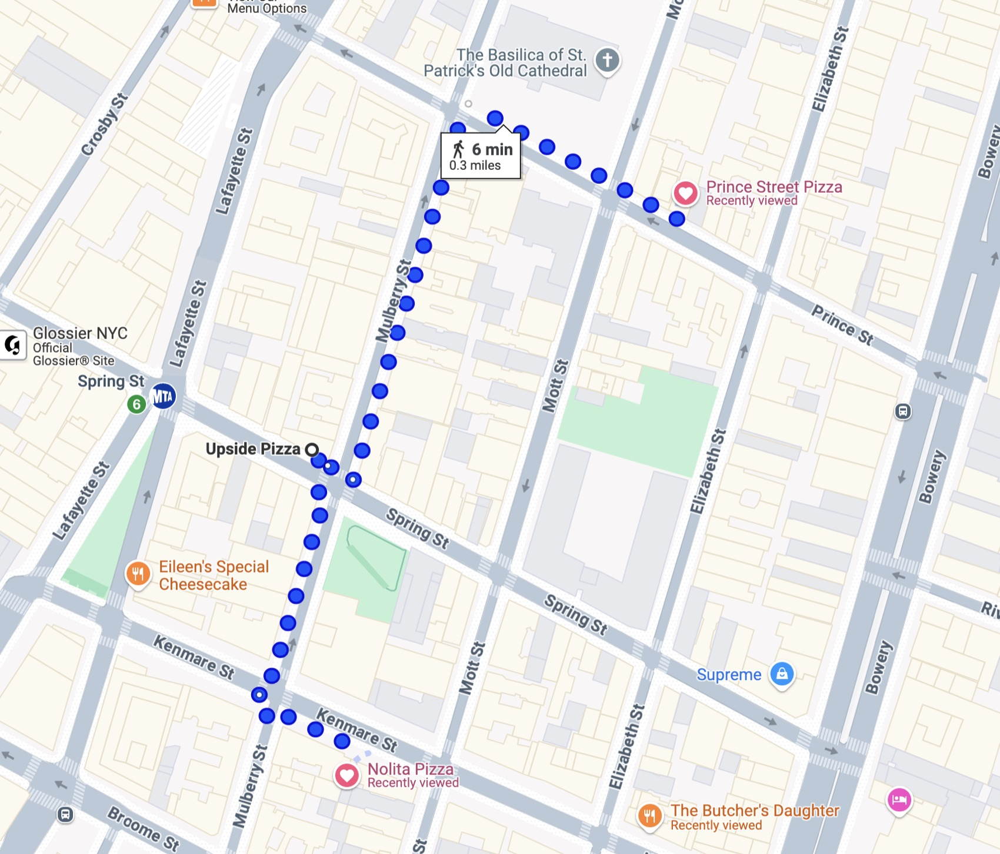

SoHo · Nolita · Manhattan
SoHo Pizza Crawl
3 stops + 2 optional
6 min walk · 0.3 mi

The route
-

NY-style version of classic Italian style pizza.
-

Sourdough crust, very good NYC pizza chain.
-

Iconic 2012 slice shop.
Extra credit
-

Great pizza but no slices.
-
Optional, about 15 minutes away.